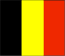
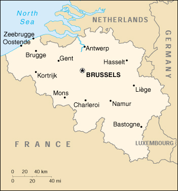

{kind=link}


| Belgium |  |
|
|  | |
| Introduction |
Background: Belgium became independent from the Netherlands in 1830 and was occupied by Germany during World Wars I and II. It has prospered in the past half century as a modern, technologically advanced European state and member of NATO and the EU. Tensions between the Dutch-speaking Flemings of the north and the French-speaking Walloons of the south have led in recent years to constitutional amendments granting these regions formal recognition and autonomy.
| Geography |
Location: Western Europe, bordering the North Sea, between France and the Netherlands
Geographic coordinates: 50 50 N, 4 00 E
Map references: Europe
Area:
total:
30,510 sq km
land:
30,230 sq km
water:
280 sq km
Area - comparative: about the size of Maryland
Land boundaries:
total:
1,385 km
border countries:
France 620 km, Germany 167 km, Luxembourg 148 km, Netherlands 450 km
Coastline: 66 km
Maritime claims:
continental shelf:
median line with neighbors
exclusive fishing zone:
median line with neighbors (extends about 68 km from coast)
territorial sea:
12 nm
Climate: temperate; mild winters, cool summers; rainy, humid, cloudy
Terrain: flat coastal plains in northwest, central rolling hills, rugged mountains of Ardennes Forest in southeast
Elevation extremes:
lowest point:
North Sea 0 m
highest point:
Signal de Botrange 694 m
Natural resources: coal, natural gas
Land use:
arable land:
24%
permanent crops:
1%
permanent pastures:
20%
forests and woodland:
21%
other:
34%
Irrigated land: NA sq km
Natural hazards: flooding is a threat in areas of reclaimed coastal land, protected from the sea by concrete dikes
Environment - current issues: the environment is exposed to intense pressures from human activities: urbanization, dense transportation network, industry, intense animal breeding and crop cultivation; air and water pollution also have repercussions for neighboring countries; uncertainties regarding federal and regional responsibilities (now resolved) have impeded progress in tackling environmental challenges
Environment - international agreements:
party to:
Air Pollution, Air Pollution-Sulphur 85, Antarctic-Environmental Protocol, Antarctic Treaty, Biodiversity, Climate Change, Desertification, Endangered Species, Environmental Modification, Hazardous Wastes, Law of the Sea, Marine Dumping, Marine Life Conservation, Nuclear Test Ban, Ozone Layer Protection, Ship Pollution, Tropical Timber 83, Tropical Timber 94, Wetlands
signed, but not ratified:
Air Pollution-Nitrogen Oxides, Air Pollution-Persistent Organic Pollutants, Air Pollution-Sulphur 94, Air Pollution-Volatile Organic Compounds, Climate Change-Kyoto Protocol
Geography - note: crossroads of Western Europe; majority of West European capitals within 1,000 km of Brussels which is the seat of both the EU and NATO
| People |
Population: 10,241,506 (July 2000 est.)
Age structure:
0-14 years:
18% (male 919,445; female 877,896)
15-64 years:
66% (male 3,386,193; female 3,334,081)
65 years and over:
16% (male 701,842; female 1,022,049) (2000 est.)
Population growth rate: 0.18% (2000 est.)
Birth rate: 10.91 births/1,000 population (2000 est.)
Death rate: 10.13 deaths/1,000 population (2000 est.)
Net migration rate: 0.98 migrant(s)/1,000 population (2000 est.)
Sex ratio:
at birth:
1.05 male(s)/female
under 15 years:
1.05 male(s)/female
15-64 years:
1.02 male(s)/female
65 years and over:
0.69 male(s)/female
total population:
0.96 male(s)/female (2000 est.)
Infant mortality rate: 4.76 deaths/1,000 live births (2000 est.)
Life expectancy at birth:
total population:
77.8 years
male:
74.47 years
female:
81.3 years (2000 est.)
Total fertility rate: 1.61 children born/woman (2000 est.)
Nationality:
noun:
Belgian(s)
adjective:
Belgian
Ethnic groups: Fleming 58%, Walloon 31%, mixed or other 11%
Religions: Roman Catholic 75%, Protestant or other 25%
Languages: Dutch 58%, French 32%, German 10%, legally bilingual
Literacy:
definition:
age 15 and over can read and write
total population:
98%
male:
NA%
female:
NA%
| Government |
Country name:
conventional long form:
Kingdom of Belgium
conventional short form:
Belgium
local long form:
Royaume de Belgique/Koninkrijk Belgie
local short form:
Belgique/Belgie
Data code: BE
Government type: federal parliamentary democracy under a constitutional monarch
Capital: Brussels
Administrative divisions:
10 provinces (French: provinces, singular - province; Flemish: provincien, singular - provincie); Antwerpen, Brabant Wallon, Hainaut, Liege, Limburg, Luxembourg, Namur, Oost-Vlaanderen, Vlaams Brabant, West-Vlaanderen
note:
the Brussels Capital Region is not included within the 10 provinces
Independence: 4 October 1830 (from the Netherlands)
National holiday: National Day, 21 July (ascension of King LEOPOLD I to the throne in 1831)
Constitution: 7 February 1831, last revised 14 July 1993; parliament approved a constitutional package creating a federal state
Legal system: civil law system influenced by English constitutional theory; judicial review of legislative acts; accepts compulsory ICJ jurisdiction, with reservations
Suffrage: 18 years of age; universal and compulsory
Executive branch:
chief of state:
King ALBERT II (since 9 August 1993); Heir Apparent Prince PHILIPPE, son of the monarch
head of government:
Prime Minister Guy VERHOFSTADT (since 13 July 1999)
cabinet:
Council of Ministers appointed by the monarch and approved by Parliament
elections:
none; the monarch is hereditary; prime minister appointed by the monarch and then approved by Parliament
note:
government coalition - VLD, PRL, PS, SP, AGALEV, and ECOLO
Legislative branch:
bicameral Parliament consists of a Senate or Senaat in Dutch, Senat in French (71 seats; 40 members are directly elected by popular vote, 31 are indirectly elected; members serve four-year terms) and a Chamber of Deputies or Kamer van Volksvertegenwoordigers in Dutch, Chambre des Representants in French (150 seats; members are directly elected by popular vote on the basis of proportional representation to serve four-year terms)
elections:
Senate and Chamber of Deputies - last held 13 June 1999 (next to be held in NA 2003)
election results:
Senate - percent of vote by party - VLD 15.4%, CVP 14.7%, PRL 10.6%, PS 9.7%, VB 9.4%, SP 8.9%, ECOLO 7.4%, AGALEV 7.1%, PSC 6.0%, VU 5.1%; seats by party - VLD 11, CVP 10, PS 10, PRL 9, VB 6, SP 6, ECOLO 6, AGALEV 5, PSC 5, VU 3; Chamber of Deputies - percent of vote by party - VLD 14.3%, CVP 14.1%, PS 10.2%, PRL 10.1%, VB 9.9%, SP 9.5%, ECOLO 7.4%, AGALEV 7.0%, PSC 5.9%, VU 5.6%; seats by party - VLD 23, CVP 22, PS 19, PRL 18, VB 15, SP 14, ECOLO 11, PSC 10, AGALEV 9, VU 8, FN 1
note:
as a result of the 1993 constitutional revision that furthered devolution into a federal state, there are now three levels of government (federal, regional, and linguistic community) with a complex division of responsibilities; this reality leaves six governments each with its own legislative assembly; for other acronyms of the listed parties see Political parties and leaders
Judicial branch: Supreme Court of Justice or Hof van Cassatie in Dutch, Cour de Cassation in French, judges are appointed for life by the Belgian monarch
Political parties and leaders: AGALEV (Flemish Greens) [Wilfried BERVOETS]; ECOLO (Francophone Greens) [no president]; Flemish Christian Democrats or CVP (Christian People's Party) [Stefaan DE CLERCK, president]; Flemish Liberal Democrats or VLD [Karel DE GUCHT, president]; Flemish Socialist Party or SP [Patrick JANSSENS, president]; Francophone Christian Democrats or PSC (Social Christian Party) [Joelle MILQUET, president]; Francophone Democratic Front or FDF [Olivier MAINGAIN, president]; Francophone Liberal Reformation Party or PRL [Daniel DUCARME, president]; Francophone Socialist Party or PS [Elio DI RUPO, president]; National Front or FN [Dr. FERET]; Vlaams Blok or VB [Frank VANHECKE]; Volksunie or VU [Geert BOURGEOIS, president]; other minor parties
Political pressure groups and leaders: Christian and Socialist Trade Unions; Federation of Belgian Industries; numerous other associations representing bankers, manufacturers, middle-class artisans, and the legal and medical professions; various organizations represent the cultural interests of Flanders and Wallonia; various peace groups such as the Flemish Action Committee Against Nuclear Weapons and Pax Christi
International organization participation: ACCT, AfDB, AsDB, Australia Group, Benelux, BIS, CCC, CE, CERN, EAPC, EBRD, ECE, EIB, EMU, ESA, EU, FAO, G- 9, G-10, IADB, IAEA, IBRD, ICAO, ICC, ICFTU, ICRM, IDA, IEA, IFAD, IFC, IFRCS, IHO, ILO, IMF, IMO, Inmarsat, Intelsat, Interpol, IOC, IOM, ISO, ITU, NATO, NEA, NSG, OAS (observer), OECD, OPCW, OSCE, PCA, UN, UNCTAD, UNESCO, UNHCR, UNIDO, UNMIK, UNMOGIP, UNMOP, UNRWA, UNTSO, UPU, WADB (nonregional), WCL, WEU, WHO, WIPO, WMO, WTrO, ZC
Diplomatic representation in the US:
chief of mission:
Ambassador Alexis REYN
chancery:
3330 Garfield Street NW, Washington, DC 20008
telephone:
[1] (202) 333-6900
FAX:
[1] (202) 333-3079
consulate(s) general:
Atlanta, Chicago, Los Angeles, and New York
Diplomatic representation from the US:
chief of mission:
Ambassador Paul CEJAS
embassy:
27 Boulevard du Regent, B-1000 Brussels
mailing address:
PSC 82, Box 002, APO AE 09710
telephone:
[32] (2) 508-2111
FAX:
[32] (2) 511-2725
Flag description: three equal vertical bands of black (hoist side), yellow, and red; the design was based on the flag of France
| Economy |
Economy - overview: This modern private enterprise economy has capitalized on its central geographic location, highly developed transport network, and diversified industrial and commercial base. Industry is concentrated mainly in the populous Flemish area in the north, although the government is encouraging investment in the southern region of Wallonia. With few natural resources, Belgium must import substantial quantities of raw materials and export a large volume of manufactures, making its economy unusually dependent on the state of world markets. About three-quarters of its trade is with other EU countries. Belgium's public debt fell from 127% of GDP in 1996 to 122% of GDP in 1998 and the government is trying to control its expenditures to bring the figure more into line with other industrialized countries. Belgium became a charter member of the European Monetary Union (EMU) in January 1999. The dioxin crisis - beginning in June 1999 with the discovery of a cancer-causing substance in animal feed - constituted a serious blow to the food-processing industry, both domestically and internationally. This crisis slowed down GDP growth with recovery expected in the year 2000.
GDP: purchasing power parity - $243.4 billion (1999 est.)
GDP - real growth rate: 1.8% (1999 est.)
GDP - per capita: purchasing power parity - $23,900 (1999 est.)
GDP - composition by sector:
agriculture:
1.4%
industry:
27%
services:
71.6% (1999 est.)
Population below poverty line: 4%
Household income or consumption by percentage share:
lowest 10%:
3.7%
highest 10%:
20.2% (1992)
Inflation rate (consumer prices): 1% (1999 est.)
Labor force: 4.341 million (1999)
Labor force - by occupation: services 73%, industry 25%, agriculture 2% (1999 est.)
Unemployment rate: 9% (1999 est.)
Budget:
revenues:
$116.5 billion
expenditures:
$119 billion, including capital expenditures of $10.7 billion (1998 est.)
Industries: engineering and metal products, motor vehicle assembly, processed food and beverages, chemicals, basic metals, textiles, glass, petroleum, coal
Industrial production growth rate: -1% (1999 est.)
Electricity - production: 78.702 billion kWh (1998)
Electricity - production by source:
fossil fuel:
42.48%
hydro:
0.49%
nuclear:
55.72%
other:
1.31% (1998)
Electricity - consumption: 74.543 billion kWh (1998)
Electricity - exports: 6.4 billion kWh (1998)
Electricity - imports: 7.75 billion kWh (1998)
Agriculture - products: sugar beets, fresh vegetables, fruits, grain, tobacco; beef, veal, pork, milk
Exports: $187.3 billion (f.o.b., 1999)
Exports - commodities: machinery and equipment, chemicals, diamonds, metals and metal products
Exports - partners: EU 76% (Germany 19%, France 18%, Netherlands 12%, UK 10%) (1998)
Imports: $172.8 billion (f.o.b., 1999)
Imports - commodities: machinery and equipment, chemicals, metals and metal products
Imports - partners: EU 71% (Germany 18%, Netherlands 17%, France 14%, UK 9%) (1998)
Debt - external: $28.3 billion (1999 est.)
Economic aid - donor: ODA, $764 million (1997)
Currency: 1 Belgian franc (BF) = 100 centimes
Exchange rates:
euros per US$1 - 0.9867 (January 2000), 0.9386 (1999); Belgian francs (BF) per US$1 - 34.77 (January 1999), 36.229 (1998), 35.774 (1997), 30.962 (1996), 29.480 (1995)
note:
on 1 January 1999, the EU introduced a common currency that is now being used by financial institutions in some member countries at a fixed rate of 40.3399 Belgian francs per euro; the euro will replace the local currency in consenting countries for all transactions in 2002
Fiscal year: calendar year
| Communications |
Telephones - main lines in use: 4.632 million (1995)
Telephones - mobile cellular: 664,000 (1999)
Telephone system:
highly developed, technologically advanced, and completely automated domestic and international telephone and telegraph facilities
domestic:
nationwide cellular telephone system; extensive cable network; limited microwave radio relay network
international:
5 submarine cables; satellite earth stations - 2 Intelsat (Atlantic Ocean) and 1 Eutelsat
Radio broadcast stations: FM 79, AM 7, shortwave 1 (1998)
Radios: 8.075 million (1997)
Television broadcast stations: 24 (1997)
Televisions: 4.72 million (1997)
Internet Service Providers (ISPs): 51 (1999)
| Transportation |
Railways:
total:
3,437 km (2,446 km electrified; 2,563 km double track)
standard gauge:
3,437 km 1.435-m gauge (1998)
Highways:
total:
145,850 km
paved:
117,701 km (including 1,682 km of expressways)
unpaved:
28,149 km (1998)
Waterways: 2,043 km (1,528 km in regular commercial use)
Pipelines: crude oil 161 km; petroleum products 1,167 km; natural gas 3,300 km
Ports and harbors: Antwerp (one of the world's busiest ports), Brugge, Gent, Hasselt, Liege, Mons, Namur, Oostende, Zeebrugge
Merchant marine:
total:
22 ships (1,000 GRT or over) totaling 35,075 GRT/57,347 DWT
ships by type:
cargo 7, chemical tanker 8, petroleum tanker 7 (1999 est.)
Airports: 42 (1999 est.)
Airports - with paved runways:
total:
24
over 3,047 m:
6
2,438 to 3,047 m:
8
1,524 to 2,437 m:
3
914 to 1,523 m:
1
under 914 m:
6 (1999 est.)
Airports - with unpaved runways:
total:
18
914 to 1,523 m:
2
under 914 m:
16 (1999 est.)
Heliports: 1 (1999 est.)
| Military |
Military branches: Army, Navy, Air Force, National Gendarmerie
Military manpower - military age: 19 years of age
Military manpower - availability:
males age 15-49:
2,527,752 (2000 est.)
Military manpower - fit for military service:
males age 15-49:
2,090,800 (2000 est.)
Military manpower - reaching military age annually:
males:
64,165 (2000 est.)
Military expenditures - dollar figure: $2.8 billion (FY99)
Military expenditures - percent of GDP: 1.2% (FY99)
| Transnational Issues |
Disputes - international: none
Illicit drugs: source of precursor chemicals for South American cocaine processors; transshipment point for cocaine, heroin, hashish, and marijuana entering Western Europe